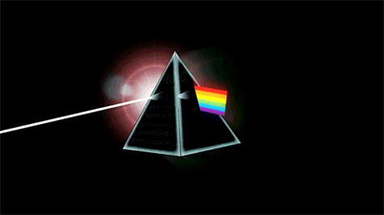

Esta página web se realizo con la ayuda de los alumnos del 6°"D" con el poposito de obtener información rapida, clara y de manera precisa.
INTEGRANTES: INTRODUCCIÓN:
♦ CERVANTES RIVERA FRANCISCO MANUEL
♦ LÓPEZ LUJAN JAEL JAASIEL
♦ ROJAS RUIZ JULIO CESAR
♦ SANDOVAL DÍAZ LUIS ANTONIO
♦ SULIK FÉLIX FÁTIMA
Está página nos brindara información util para saber más acerca de la ÓPTICA y asi poder comprender mejor este tema.

TEMAS
ÓPTICA
DEFINICION DE LUZ